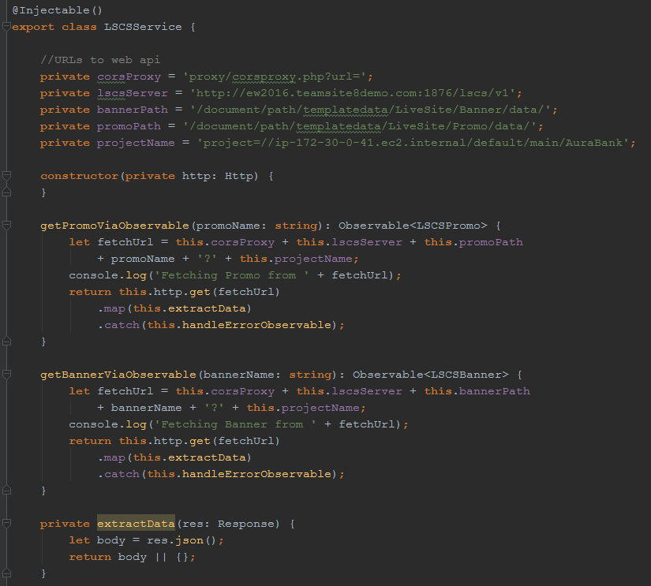
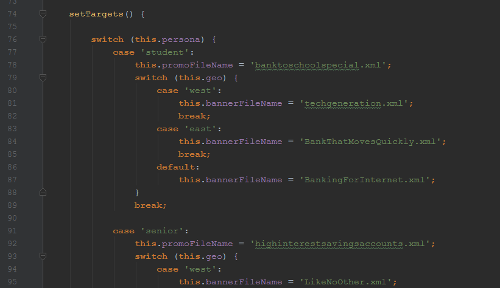
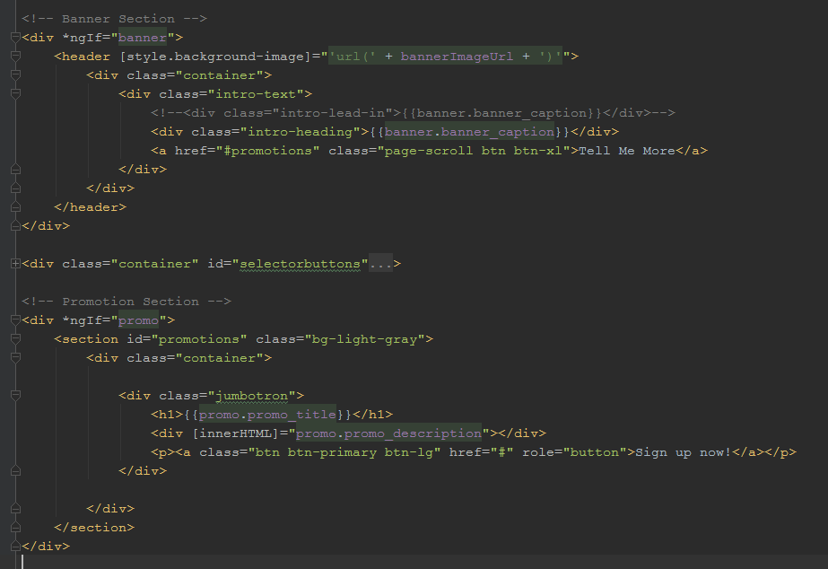

In this demo site we're using Angular2 along with Bootstrap to create a very simple single page app. The Banner area and Promo areas at the top are both controlled by an angular component that controls things dynamically from within the client browser.
Previously, we created a handful of content items in TeamSite for both Banners (which contain a caption and an image) as well as Promos (which contain a title and description). These were then published to our LSCS content server via the standard OpenDeploy mechanism. (Presumably with all the normal approval workflows, but for our demo we’ve skipped that part.)
When the page displays in the browser, the page itself is served by a web server entirely unconnected to TeamSite. The front-end display is entirely contained within the Angular2 front-end. But that Angular2 component then makes RESTful calls back to the LSCS server to fetch the appropriate content for the Banner and Promo.
As a result, we can now make changes to the Banner and Promo content items from within TeamSite, and the Angular2 site updates itself without any need for changes to the front-end.
For those technically curious, here is the code for the angular components which are making the REST calls to render the page dynamically. (FYI our oh-so-vain programmers wanted us to include the caveat that this is not "good code", but rather proof-of-concept stuff pulled together for demonstration purposes.
The LSCS content is pulled from an angular service component as shown below. This is the piece that gets given a file name and goes out to the LSCS server and pulls back the relevant object (via RESTful calls) and returns a JSON object.
In the app.component we have hard-wired some code using basic switch statement to pick the relevant LSCS content item based on which of the buttons have been pressed.
In a real-world example you wouldn't be relying on buttons to select the Persona and Geo, but rather something like a session cookie or some other internal trigger for personalization. You might also choose to not hard-wire your rules engine into the code, but could instead rely on the rules engine built into LSCS, making a RESTful call with your parameters and letting LSCS find and return the appropriate content based on those supplied parameters.
Once the appropriate Banner and Promo are fetched, they are already bound to the app.component's HTML template in standard Angular2 fashion, as shown below.
If you're curious, when we make the REST call we either get back XML (the default) or JSON (by adding ?format=json to the query). Here are some sample calls with hyperlinks so you can see what comes back from the server (this is live stuff, coming back from the LSCS server):